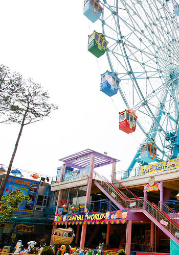

HOME > 테마파크 > 테마파크소개
테마파크소개
"월미테마파크는 항상 고객들에게 늘 새롭고
즐거움이 가득한 테마파크로 기억남기 위해 노력하고 있습니다."
-

- 1년 365일 즐거움이 있는곳!
- 자연풍광이 뛰어난 월미도에서 1992년 개장 이래
많은 사랑을 받아오던 마이랜드를 시작으로,
2009년 월미테마파크 라는 4,000평 대규모 시설로 재 탄생 하였습니다. - 월미테마파크는 스릴만점 지상 70m높이 하이퍼드롭부터
월미도 관광객은 한번쯤 타봤다는 월미도의 마스코트 타가다 디스코,
극강스릴! 세계 최초 2층바이킹, 인천 앞바다가 보이는 115m 대관람차 등
메이저급 어트랙션이 완비되어 있어
<자이언트 펭>, <뮤직비디오 비-깡>, <sbs 런닝맨> 등의 다양한 방송 출연지로
전국적인 유명세를 떨치고 있습니다.
-
- 월미도의 새로운 초대형 놀이교육 테마파크
- 2,500평 규모 실내 놀이교육체혐관 차피패밀리파크 와 물공놀이,
미니 후룸라이드, 물놀이보프 등 시원한 물놀이존,
30여가지 어린이 놀이시설, vr가상체험존까지
온가족이 즐거운 복합 테마파크입니다.
-
- 자연이 함께하는 즐거움
- 인천 앞바다와 그 주위의 섬, 황금빛 노을이 몰아치는 월미테마파크는
자연의 풍경도 함께 즐기며, 평소에 쉽게 접하지 못하는 자연을
온몸으로 느끼고, 만끽할 수 있습니다.
자연풍광이 뛰어난 월미도와 스릴넘치는 놀이기구가 함께합니다.